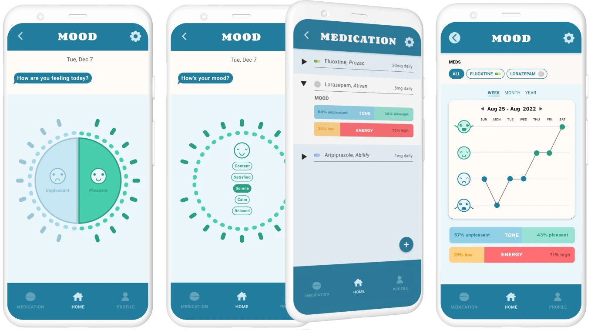
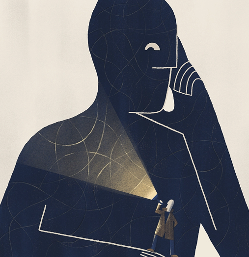
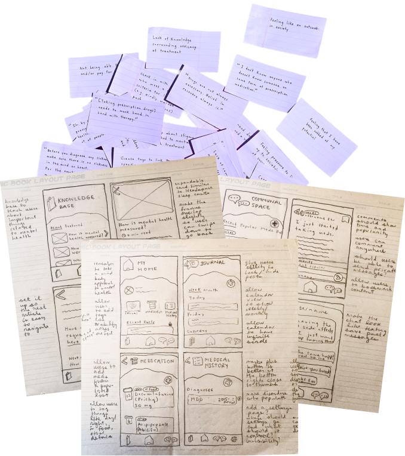
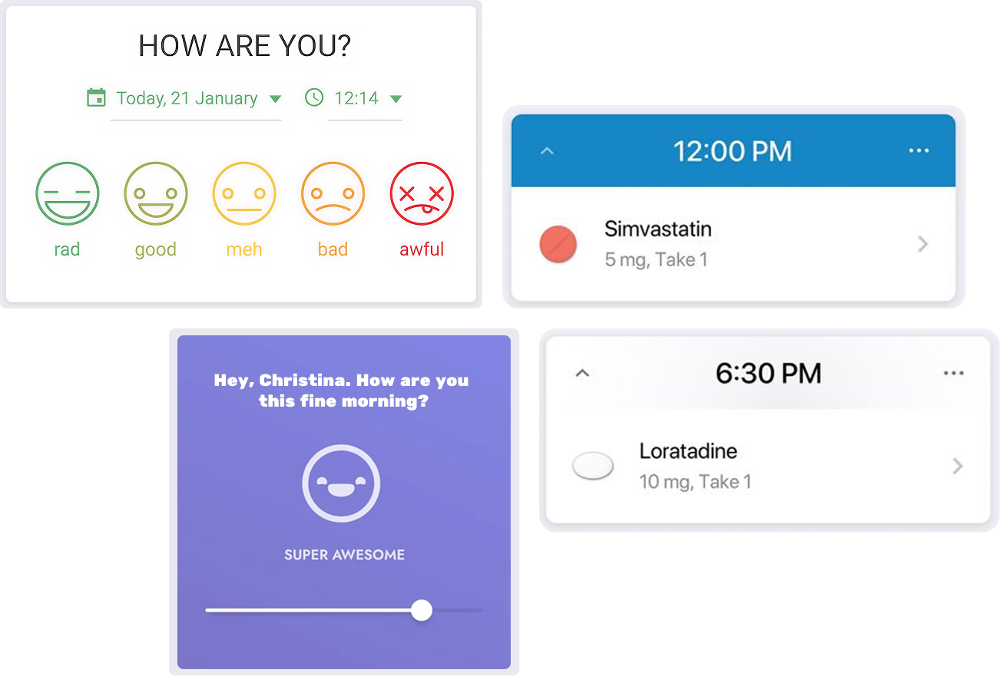

OK NOT OK
Mind your medication
A mood tracking app to understand the impact of psychiatric medication

THE PROBLEM
The impact of psychiatric medication is inadequately measured
It's difficult to predict how a psychiatric medication will affect any particular person.
Doctors rely on what patients self-report—often from memory, weeks apart—leaving both sides without the detailed picture needed to find the right treatment.

DESIGNING A SOLUTION
Tracking medication and mood
To give patients and doctors better data, I designed a mobile app to track the relationship between psychiatric medication and mood over time.

RESEARCH AND DISCOVERY
What shaped the design
I interviewed five people who had been taking psychiatric medication daily for at least six months, built personas to represent different user experiences, mapped findings across wants, needs, and pain points, and audited competitor apps to identify gaps.
Everything pointed towards a whole person approach—considering not just the diagnosis, but the life around it. Early sketches reflected that: community forums, journaling, knowledge bases, features for every corner of mental health.

CONTEMPLATING AND REFINING
Zeroing in on a concept
Eventually I realized my early concepts were too literal, and research pointed to something simpler—if the right medication can change someone’s life, maybe the most humanizing thing an app can do is help them find it.
To get to the core of the problem, I narrowed the scope to a medication and mood tracker and let go of ideas that would complicate the design.

FINDING THE GAP
Where existing apps fall short
With a focus established, I explored how existing apps were measuring medication and mood. Two specific issues stood out:
Mood is reduced to a single axis. Most trackers ask users to rate how good or bad they feel, flattening the full complexity of emotional experiences to a 5 or 7 point scale.
Mood data isn't linked to specific medications. Mood tracking and medication tracking tend to exist as separate tools. When apps do link experiences with medication, it's usually for symptoms related to physical conditions, not mental.

THE FINAL PRODUCT
Mood data done differently
The final result is a dedicated tracker for psychiatric medication and mood. Unlike other apps, it captures a rich range of emotional states, and connects each mood entry to a specific medication.
Capture multi-dimensional moods
Two axes exist to capture mood tone and energy. A curated set of mood descriptors appear based on user input, helping people narrow down exactly how they're feeling.
Pinpoint mood by medication
Each mood entry is tagged to the medications a user is taking that day. Over time, users can view their mood history across all medications—or filter down to a specific one—to understand its precise impact.

REFLECTION
Why tools like this matter
Mental health treatment is, in many ways, still guesswork.
Psychiatric medication is prescribed, adjusted, and sometimes abandoned based on conversations that rely on a patient's ability to remember how they’ve felt and put it into words accurately.
Tools like this empower patients to understand the impact of their treatment and navigate towards what truly works.